배우기 전에 먼저 해 보세요. 틀려도 괜찮아요.
Die Feuerwehr rettete drei Personen.에서 rettete는 언제의 일일까요?
-te가 붙으면 Präteritum이에요.
Immer wenn ich ein Wort nicht kannte, schrieb ich es auf.에서 낱말을 적은 것은 몇 번일까요?
되풀이된 일에는 wenn을 써요.
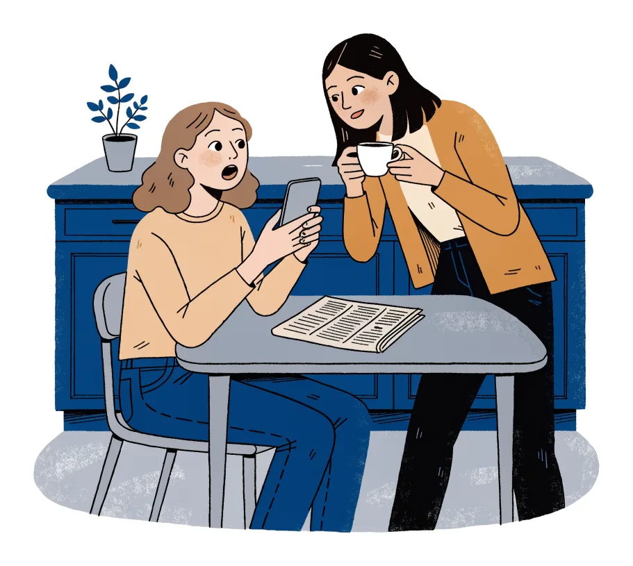
뉴스를 읽고 전하려면 지난 일을 쓰는 글말을 알아야 해요. 신문 기사는 Perfekt가 아니라 Präteritum으로 써요. 이 과에서는 kam, ging, gab 같은 모양을 익히고, 지난 일의 때를 말하는 als와 wenn을 구별해요. 읽은 기사를 몇 문장으로 간추려 전하는 연습도 해요.
문법 Präteritum (regelmäßige und unregelmäßige Verben), als, wenn
과제대학대학 신문 기사를 읽고 요약해 전하기
과제직장업계 뉴스를 팀에 짧게 전하기
이 과를 마치면 뉴스 내용을 전하고, 미디어 습관을 말하고, 사건을 순서대로 이야기할 수 있어요.
이 과에서 쓸 말이에요. 눌러서 먼저 들어 보세요.
배우기 전에 먼저 해 보세요. 틀려도 괜찮아요.
Die Feuerwehr rettete drei Personen.에서 rettete는 언제의 일일까요?
-te가 붙으면 Präteritum이에요.
Immer wenn ich ein Wort nicht kannte, schrieb ich es auf.에서 낱말을 적은 것은 몇 번일까요?
되풀이된 일에는 wenn을 써요.
Lektion 2의 낱말 다섯 개를 다시 떠올려 보세요.
10월의 금요일 아침, WG 부엌이에요. 어제저녁에 동네에 정전이 있었어요. Lena가 휴대폰으로 기사를 읽어요.
들으면서 찾아보세요. 정전의 원인은 무엇이었나요?
월요일 오전, 팀 회의예요. Frau Hoffmann이 업계 소식을 물어요. Dohyun이 주말에 읽은 기사를 전해요.
들으면서 찾아보세요. 경쟁사의 새 기계는 무엇이 다른가요?
어학원 수업 시간이에요. 오늘의 주제는 미디어예요. Frau Becker가 Sora에게 물어요.
들으면서 찾아보세요. Sora는 독일에 처음 왔을 때 뉴스를 어떻게 공부했나요?
세 대화를 듣고 답하세요.
정전은 얼마 동안 이어졌나요?
불이 꺼졌을 때 Jiu는 어디에 있었나요?
Die Ursache war ein kaputtes Kabel auf einer Baustelle.
Lindner의 새 기계는 무엇이 다른가요?
In dem Artikel stand auch der Preis.
값에 대한 말은 없었어요.
Frau Hoffmann은 Dohyun에게 무엇을 부탁하나요?
Sora는 독일에 처음 왔을 때 무엇을 했나요?
Sora glaubt alles, was in den sozialen Medien steht.
중요한 소식은 다른 출처에서 확인해요.
낱말 51개예요. 낱말이나 예문 앞의 단추를 누르면 소리가 나요. 명사는 der, die, das를 색으로 구분했어요.
die Nachrichten 뉴스
Ich höre morgens die Nachrichten.아침에 뉴스를 들어요.
die Zeitung, die Zeitungen 신문
Das stand gestern in der Zeitung.그건 어제 신문에 났어요.
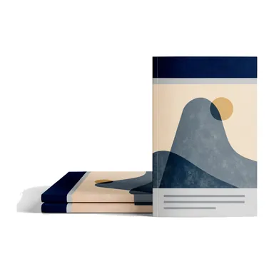
die Zeitschrift, die Zeitschriften 잡지
Ich lese eine Zeitschrift über Design.디자인 잡지를 읽어요.
der Artikel, die Artikel 기사
Der Artikel ist sehr interessant.그 기사는 아주 흥미로워요.
die Schlagzeile, die Schlagzeilen 큰 제목
Ich lese zuerst nur die Schlagzeilen.저는 먼저 큰 제목만 읽어요.
die Meldung, die Meldungen 짧은 소식
Das ist nur eine kurze Meldung.그건 짧은 소식일 뿐이에요.
berichten (hat berichtet) 전하다, 보도하다
Die Zeitung berichtet über den Stromausfall.신문이 정전을 전해요.
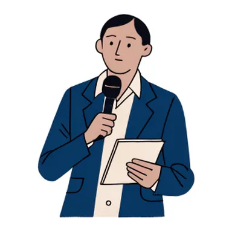
der Journalist, die Journalisten 기자
Der Journalist stellt viele Fragen.기자가 질문을 많이 해요.
das Interview, die Interviews 인터뷰
Das Interview dauert zehn Minuten.인터뷰는 10분 걸려요.
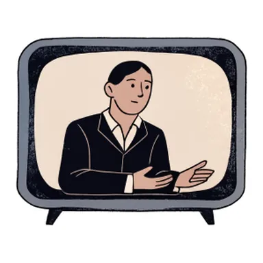
die Sendung, die Sendungen 방송 프로그램
Die Sendung beginnt um acht.그 프로그램은 8시에 시작해요.
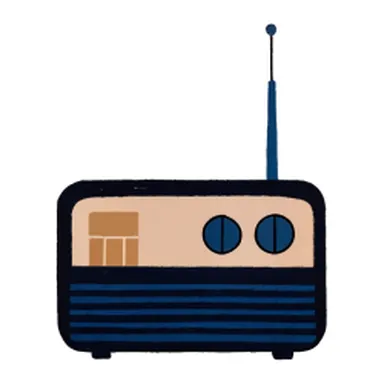
das Radio, die Radios 라디오
Ich höre gern Radio.저는 라디오를 즐겨 들어요.
die Medien 미디어
In den sozialen Medien gibt es viele Meinungen.소셜 미디어에는 의견이 많아요.
die Quelle, die Quellen 출처
Was ist die Quelle?출처가 어디예요?
aktuell 지금의, 최신의
Das ist ein aktuelles Thema.그건 요즘 이야기되는 주제예요.
erscheinen (ist erschienen) (신문, 책이) 나오다
Die Zeitung erscheint jeden Tag.그 신문은 날마다 나와요.
sich informieren (hat sich informiert) 소식을 접하다, 알아보다
Ich informiere mich im Internet.저는 인터넷에서 알아봐요.
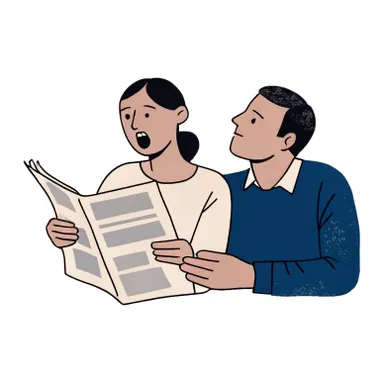
vorlesen (du liest vor, hat vorgelesen) 소리 내어 읽어 주다
Ich lese dir den Artikel vor.그 기사를 읽어 줄게요.
die Falschmeldung, die Falschmeldungen 잘못된 소식, 가짜 뉴스
Das war eine Falschmeldung.그건 잘못된 소식이었어요.
überprüfen (hat überprüft) 확인하다
Ich überprüfe immer die Quelle.저는 늘 출처를 확인해요.
das Ereignis, die Ereignisse 사건, 일
Das war ein wichtiges Ereignis.그건 중요한 일이었어요.
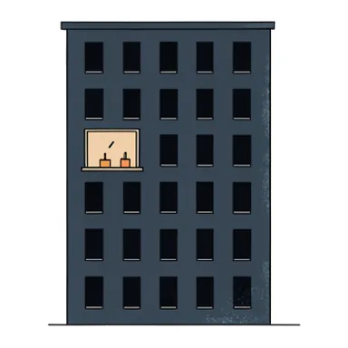
der Stromausfall, die Stromausfälle 정전
Der Stromausfall dauerte zwei Stunden.정전은 두 시간 이어졌어요.
der Strom 전기
Wir hatten keinen Strom.전기가 들어오지 않았어요.
ausgehen (ist ausgegangen) (불이) 꺼지다
Plötzlich ging das Licht aus.갑자기 불이 꺼졌어요.
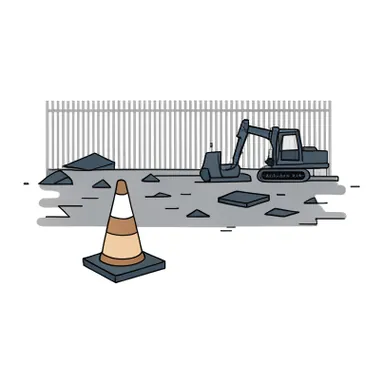
die Baustelle, die Baustellen 공사장
Vor dem Haus ist eine Baustelle.집 앞에 공사장이 있어요.
die Ursache, die Ursachen 원인
Die Ursache war ein kaputtes Kabel.원인은 끊어진 선이었어요.
die Folge, die Folgen 결과, 뒤따른 일
Der Streik hatte viele Folgen.그 파업 때문에 여러 일이 생겼어요.
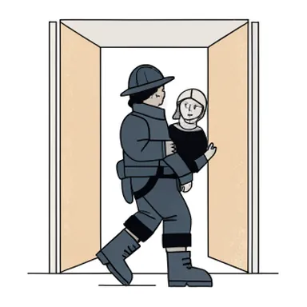
retten (hat gerettet) 구하다
Die Feuerwehr rettete drei Personen.소방대가 세 사람을 구했어요.
verletzt 다친
Zum Glück ist niemand verletzt.다행히 다친 사람이 없어요.
der Einwohner, die Einwohner 주민
Frankfurt hat viele Einwohner.프랑크푸르트는 주민이 많아요.
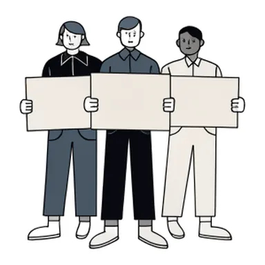
der Streik, die Streiks 파업
Wegen dem Streik fährt kein Bus.파업 때문에 버스가 안 다녀요.
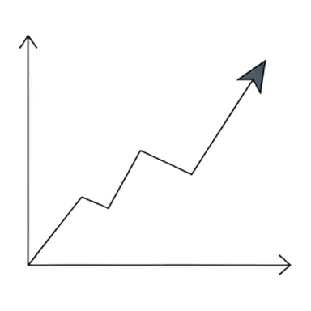
steigen (ist gestiegen) 오르다, 늘다
Die Preise sind gestiegen.값이 올랐어요.
sinken (ist gesunken) 내리다, 줄다
Die Zahl ist gesunken.그 수가 줄었어요.
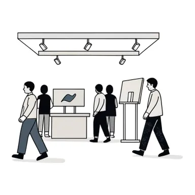
die Messe, die Messen 박람회
Die Messe findet in Stuttgart statt.박람회는 슈투트가르트에서 열려요.
das Unternehmen, die Unternehmen 기업
Das Unternehmen hat zweihundert Mitarbeiter.그 기업은 직원이 이백 명이에요.
die Branche, die Branchen 업계
Ich arbeite in der Autobranche.저는 자동차 업계에서 일해요.
das Produkt, die Produkte 제품
Das neue Produkt kommt im Frühling.새 제품은 봄에 나와요.
die Konkurrenz 경쟁사, 경쟁
Die Konkurrenz ist groß.경쟁이 심해요.
entwickeln (hat entwickelt) 개발하다
Die Firma entwickelt neue Maschinen.그 회사는 새 기계를 개발해요.
speichern (hat gespeichert) 저장하다
Ich speichere den Text.글을 저장해요.
zusammenfassen (hat zusammengefasst) 간추리다
Ich fasse den Artikel zusammen.그 기사를 간추릴게요.
die Zusammenfassung, die Zusammenfassungen 요약
Hier ist eine kurze Zusammenfassung.짧게 간추린 글이에요.
der Inhalt, die Inhalte 내용
Was ist der Inhalt?내용이 뭐예요?
das Thema, die Themen 주제
Das Thema ist interessant.주제가 흥미로워요.
es geht um ~에 대한 것이다
In dem Artikel geht es um die Messe.그 기사는 박람회에 대한 거예요.
schließlich 마지막에, 마침내
Schließlich kam der Strom wieder.마침내 전기가 다시 들어왔어요.
erfahren (du erfährst, hat erfahren) 듣다, 알게 되다
Ich habe es aus der Zeitung erfahren.그건 신문에서 알았어요.
mitteilen (hat mitgeteilt) 알리다
Die Stadt teilte mit, dass alles wieder funktioniert.시는 모든 것이 다시 된다고 알렸어요.
behaupten (hat behauptet) 주장하다
Er behauptet, dass das stimmt.그 사람은 그게 맞는다고 주장해요.
die Meinung, die Meinungen 의견
Das ist nur eine Meinung.그건 의견일 뿐이에요.
die Neuigkeit, die Neuigkeiten 새 소식
Gibt es Neuigkeiten?새 소식 있어요?
die Bildung 교육
Ich lese viel über Bildung.저는 교육에 대한 글을 많이 읽어요.
이 과의 낱말로 여덟 문제를 풀어요.
줄을 누르면 소리가 나요. 왼쪽은 Infinitiv이고 오른쪽은 er, sie, es의 Präteritum이에요.
줄을 누르면 소리가 나요. 한 번 있었던 일은 als, 되풀이된 일은 wenn이에요.
규칙
신문, 보고서, 이야기처럼 글로 지난 일을 쓸 때는 Präteritum을 써요. 규칙 동사는 어간에 -te를 붙여요. ich와 er, sie, es의 모양이 같아요. 어간이 t나 d로 끝나면 -ete를 붙여요. arbeiten은 arbeitete, warten은 wartete예요.
| 주어 | machen | arbeiten |
|---|---|---|
| ich | machte | arbeitete |
| du | machtest | arbeitetest |
| er, sie, es | machte | arbeitete |
| wir | machten | arbeiteten |
| ihr | machtet | arbeitetet |
| sie, Sie | machten | arbeiteten |
주의 말할 때는 보통 Perfekt를 써요. Ich habe einen Artikel gelesen. 하지만 sein, haben, 조동사는 말할 때도 Präteritum이에요. Ich war in der Bibliothek. Wir mussten nach Hause gehen. 뜻은 같고, 글이냐 말이냐가 달라요.
규칙을 보고 바로 확인해 보세요.
Sora … jeden Abend Radio. 빈칸에 알맞은 말은 무엇인가요?
규칙
많이 쓰는 동사일수록 모양이 바뀌어요. 이 동사들은 어간의 모음이 달라지고, ich와 er, sie, es에는 어미가 붙지 않아요. 하나씩 외워야 해요. 나뉘는 동사는 Präteritum에서도 앞부분이 문장 끝으로 가요.
| Infinitiv | er, sie, es | wir, sie |
|---|---|---|
| kommen | kam | kamen |
| gehen | ging | gingen |
| geben | gab | gaben |
| stehen | stand | standen |
| lesen | las | lasen |
| fallen | fiel | fielen |
주의 모양이 바뀌면서 -te도 붙는 동사가 몇 개 있어요. denken은 dachte, wissen은 wusste, kennen은 kannte, bringen은 brachte예요. Ich dachte, es war länger. 낱말 목록에서 Perfekt 모양과 함께 Präteritum 모양도 찾아서 익히세요.
규칙을 보고 바로 확인해 보세요.
In dem Artikel … nichts über den Preis. 빈칸에 알맞은 말은 무엇인가요?
규칙
지난날에 한 번 있었던 일이나 한 시기를 말할 때 als를 써요. als 문장은 동사가 끝에 와요. als 문장이 앞에 오면 쉼표 다음에 바로 동사가 와요. '어렸을 때', '독일에 왔을 때', '일을 시작했을 때'처럼 한 번뿐인 때는 모두 als예요.
| 때 | 쓰는 말 | 보기 |
|---|---|---|
| 지난날, 한 번 | als | Als ich ankam, regnete es. |
| 지난날, 여러 번 | wenn | Immer wenn ich ankam, regnete es. |
| 지금과 앞날 | wenn | Wenn ich ankomme, rufe ich an. |
주의 Wann은 때를 묻는 말이에요. Wann kamst du nach Deutschland? 답할 때 '~했을 때'는 als로 말해요. Als ich zwanzig war. 한국어로는 모두 '~할 때'라서 헷갈리기 쉬워요.
규칙을 보고 바로 확인해 보세요.
… ich ein Kind war, gab es nur drei Programme. 빈칸에 알맞은 말은 무엇인가요?
규칙
지난날에 여러 번 되풀이된 일은 wenn으로 말해요. immer wenn이나 jedes Mal, wenn을 쓰면 '~할 때마다'라는 뜻이 또렷해져요. 지금의 일과 앞으로의 일에는 한 번이든 여러 번이든 늘 wenn을 써요.
| 낱말 | 뜻 |
|---|---|
| als | (지난날에 한 번) ~했을 때 |
| wenn | ~할 때마다, ~하면 |
| immer wenn | ~할 때마다 |
| jedes Mal, wenn | ~할 때마다 |
주의 고를 때는 두 가지를 물어보세요. 지난 일인가요? 한 번뿐이었나요? 둘 다 '네'면 als이고, 그 밖에는 모두 wenn이에요.
규칙을 보고 바로 확인해 보세요.
Jedes Mal, … mein Vater die Zeitung las, war es still. 빈칸에 알맞은 말은 무엇인가요?
듣고 알맞은 것을 고르세요.
무슨 일이 있었나요?
Gestern Abend fiel in Bockenheim der Strom aus.
기사에 무엇이 없었나요?
In dem Artikel stand nichts über den Preis.
Sora는 언제 뉴스를 못 알아들었나요?
Als ich nach Deutschland kam, verstand ich die Nachrichten nicht.
온 가족이 텔레비전 앞에 앉은 것은 언제인가요?
Wenn die Nachrichten begannen, saß die ganze Familie vor dem Fernseher.
아침 라디오 뉴스예요. 듣고 답하세요.
Nachrichten im Radio
Radio Guten Morgen, es ist sieben Uhr. Die Nachrichten.
Radio Frankfurt. Die Mitarbeiter im Nahverkehr streikten gestern den ganzen Tag. Busse und Straßenbahnen fuhren nicht. Heute fahren alle Linien wieder normal.
Radio Am Mittwoch begann die Buchmesse. Bis Sonntag kann man dort neue Bücher aus der ganzen Welt sehen.
Radio Und das Wetter: Heute bleibt es kühl und nass. Morgen scheint wieder die Sonne.
Warum fuhren gestern keine Busse?
Heute fahren die Straßenbahnen wieder.
Wann begann die Buchmesse?
내일 날씨는 어떤가요?
Lena가 읽어 준 신문 기사예요. 읽고 답하세요.
Zwei Stunden ohne Strom
Frankfurt. Am Donnerstagabend fiel im Stadtteil Bockenheim der Strom aus. Etwa 5.000 Haushalte saßen von 21.10 Uhr bis 23.15 Uhr im Dunkeln.
Die Ursache war ein kaputtes Kabel auf einer Baustelle an der Hauptstraße.
Auch die Straßenbahnlinie 16 fuhr eine Stunde lang nicht, und viele Ampeln funktionierten nicht. Die Polizei half an den Kreuzungen.
Die Feuerwehr rettete drei Personen aus einem Aufzug. Verletzt war niemand.
Aus der Universitätsbibliothek gingen etwa 200 Studierende nach Hause.
Am Freitag entschuldigte sich der Stromanbieter bei den Einwohnern.
Wann fiel der Strom aus?
Der Strom war drei Stunden lang weg.
21시 10분부터 23시 15분까지, 두 시간쯤이에요.
Was war die Ursache?
Was machte die Feuerwehr?
Niemand war verletzt.
Präteritum이에요. 알맞은 모양을 고르세요.
Die Feuerwehr drei Personen.
소방대가 세 사람을 구했어요.
Die Ampeln nicht.
신호등이 꺼져 있었어요.
Die Mitarbeiter den ganzen Tag.
직원들이 하루 종일 파업했어요.
Ich jeden Abend Radio.
저는 저녁마다 라디오를 들었어요.
Der Chef , dass viele Kunden Interesse haben.
사장은 관심을 보이는 고객이 많다고 말했어요.
Wir eine Stunde auf die Straßenbahn.
우리는 전차를 한 시간 기다렸어요.
어간이 t로 끝나면 -ete를 붙여요.
괄호 안의 동사를 Präteritum으로 쓰세요.
Gestern Abend der Strom aus. (fallen)
어제저녁에 전기가 나갔어요.
Jiu zu Fuß nach Hause. (gehen)
Jiu는 걸어서 집에 왔어요.
Eine Mitarbeiterin in den Raum. (kommen)
직원이 방에 들어왔어요.
In dem Artikel nichts über den Preis. (stehen)
기사에는 값에 대한 말이 없었어요.
Früher es nur drei Programme. (geben)
예전에는 채널이 세 개뿐이었어요.
Sora neue Wörter immer auf. (schreiben)
Sora는 새 낱말을 늘 적어 뒀어요.
als와 wenn 가운데 알맞은 것을 고르세요.
ich nach Deutschland kam, verstand ich nichts.
독일에 왔을 때 아무것도 못 알아들었어요.
Immer ich ein Wort nicht kannte, schrieb ich es auf.
모르는 낱말이 나올 때마다 적어 뒀어요.
das Licht ausging, saß Jiu am Computer.
불이 꺼졌을 때 Jiu는 컴퓨터 앞에 앉아 있었어요.
ich einen Aufzug sehe, nehme ich die Treppe.
승강기를 보면 저는 계단으로 가요.
지금의 일에는 늘 wenn이에요.
Frau Becker ein Kind war, gab es nur drei Programme.
Frau Becker가 어렸을 때는 채널이 세 개뿐이었어요.
Jedes Mal, die Nachrichten begannen, war es still.
뉴스가 시작될 때마다 조용해졌어요.
낱말을 순서대로 눌러 문장을 만드세요.
독일에 왔을 때 아무것도 못 알아들었어요.
어제저녁에 보켄하임에서 전기가 나갔어요.
기사에는 값에 대한 말이 없었어요.
소방대가 승강기에서 세 사람을 구했어요.
모르는 낱말이 나올 때마다 적어 뒀어요.
어울리는 말을 짝지으세요.
빈칸에 알맞은 낱말을 쓰세요.
Ich lese zuerst nur die .
저는 먼저 큰 제목만 읽어요.
Die war ein kaputtes Kabel.
원인은 끊어진 선이었어요.
Wegen dem fährt heute kein Bus.
파업 때문에 오늘은 버스가 안 다녀요.
In dem Artikel es um die Messe.
그 기사는 박람회에 대한 거예요.
듣고 그대로 써 보세요.
Gestern Abend fiel der Strom aus. 어제저녁에 전기가 나갔어요.
Es ging um die Messe in Stuttgart. 슈투트가르트 박람회에 대한 것이었어요.
Als ich nach Deutschland kam, verstand ich nichts. 독일에 왔을 때 아무것도 못 알아들었어요.
Hast du gelesen, dass …? ~라는 거 읽었어요?
In dem Artikel stand, dass … 기사에 ~라고 나와 있었어요.
Es ging um die Messe. 박람회에 대한 것이었어요.
Laut dem Bericht kommt die Maschine im Frühling. 기사에 따르면 그 기계는 봄에 나와요.
Zuerst blieben alle sitzen. 처음에는 모두 앉아 있었어요.
Dann kam eine Mitarbeiterin. 그러다가 직원이 왔어요.
Als das Licht ausging, saß ich am Computer. 불이 꺼졌을 때 컴퓨터 앞에 앉아 있었어요.
Schließlich ging ich zu Fuß nach Hause. 마지막에는 걸어서 집에 왔어요.
In dem Artikel geht es um die Mensa. 그 기사는 대학 식당에 대한 거예요.
Kurz gesagt: Die Mensa hat jetzt auch abends geöffnet. 짧게 말하면 대학 식당이 이제 저녁에도 열어요.
Das Wichtigste ist die Zahl. 가장 중요한 것은 그 숫자예요.
Mehr stand nicht in dem Artikel. 기사에 그 이상은 없었어요.
Ich lese die Nachrichten auf dem Handy. 저는 휴대폰으로 뉴스를 읽어요.
Ich informiere mich jeden Morgen. 저는 아침마다 소식을 확인해요.
Ich überprüfe immer die Quelle. 저는 늘 출처를 확인해요.
Am liebsten lese ich über Technik. 저는 기술에 대한 글을 가장 즐겨 읽어요.
Wirklich? Das wusste ich nicht. 정말요? 몰랐어요.
Zum Glück ist nichts passiert. 다행히 아무 일도 없었네요.
Das ist ja unglaublich! 믿기지 않네요!
Woher hast du das? 그건 어디에서 들었어요?
과제 고르기
역할 대화와 말하기, 쓰기 과제는 대학 생활과 직장 생활 두 가지예요. 하나를 고르면 다음 과에서도 그쪽 과제가 나와요. 언제든 바꿀 수 있어요.
대화 A에서 역할을 하나 고르세요. 상대의 말은 음성으로 나오고, 내 차례에는 직접 말해요.
대화 B에서 역할을 하나 고르세요. 상대의 말은 음성으로 나오고, 내 차례에는 직접 말해요.
내가 소식을 접하는 방법을 떠올리고 칸을 채우세요. 완성된 문장을 소리 내어 읽어 보세요.
Ich informiere mich so: die Nachrichten auf dem Handy.
Das mache ich meistens morgens in der Bahn.
Am liebsten lese ich über Technik und Sport.
Als ich ein Kind war, sah meine Familie jeden Abend die Fernsehnachrichten.
대학 신문에서 기사를 읽었어요. 친구가 무슨 기사인지 물어요. 친구의 질문에 답해요.
기사 내용은 이래요. 대학 식당이 지난주에 처음으로 저녁에도 문을 열었어요. 18시부터 20시까지예요. 학생들은 2년 전부터 그렇게 해 달라고 했어요. 첫날 저녁에 학생 300명이 왔어요. 먼저 석 달 동안 해 보고, 그 뒤에 대학이 정해요.
친구가 물어요. 쪽지를 보고 답하세요. 질문을 듣고 소리 내어 답한 뒤 예시 답과 비교해 보세요.
Was liest du da? 뭘 읽고 있어요?
Einen Artikel aus der Uni-Zeitung. Es geht um die Mensa.
Was ist passiert? 무슨 일이 있었어요?
Die Mensa öffnete letzte Woche zum ersten Mal auch am Abend, von achtzehn bis zwanzig Uhr.
Warum erst jetzt? 왜 이제야 한대요?
Laut dem Artikel wollten die Studierenden das schon seit zwei Jahren.
Kamen viele Leute? 사람이 많이 왔대요?
Ja. Am ersten Abend kamen dreihundert Studierende.
Bleibt das jetzt so? 이제 계속 그렇게 해요?
Zuerst nur drei Monate. Danach entscheidet die Universität.
Kurz zusammengefasst
읽은 기사를 친구들에게 간추려 전하는 글을 써 보세요. 여섯 문장쯤 써요.
In der Uni-Zeitung stand ein interessanter Artikel über die Mensa. Letzte Woche öffnete sie zum ersten Mal auch am Abend. Am ersten Tag kamen 300 Studierende, und die Mensa war voll. Als sie um 20 Uhr schloss, warteten immer noch Leute vor der Tür. Die Studierenden wollten das schon seit zwei Jahren. Die Universität testet die neuen Zeiten zuerst drei Monate lang.
다 쓴 뒤에 확인해 보세요.
주말에 업계 소식을 읽었어요. 월요일 회의에서 팀장이 물어요. 팀장의 질문에 답해요.
기사 내용은 이래요. 경쟁사 Lindner가 지난주 슈투트가르트 박람회에서 새 기계를 선보였어요. 전기를 20퍼센트 덜 써요. 봄에 시장에 나와요. 값은 기사에 없었어요. 기사는 박람회 누리집에 있어요.
팀장이 물어요. 쪽지를 보고 답하세요. 질문을 듣고 소리 내어 답한 뒤 예시 답과 비교해 보세요.
Gibt es Neuigkeiten aus der Branche? 업계에 새 소식이 있나요?
Ja. Ich habe einen Artikel über die Messe in Stuttgart gelesen. Es ging um die Firma Lindner.
Was stand in dem Artikel? 기사에 뭐라고 나와 있었어요?
Lindner stellte letzte Woche eine neue Maschine vor. Sie braucht zwanzig Prozent weniger Strom.
Wann kommt sie auf den Markt? 언제 시장에 나와요?
Laut dem Artikel im Frühling.
Und der Preis? 값은요?
Der stand nicht in dem Artikel.
Woher haben Sie die Information? 그 소식은 어디에서 보셨어요?
Der Artikel stand auf der Internetseite von der Messe. Ich schicke Ihnen den Link.
Eine Nachricht an das Team
읽은 업계 소식을 팀에 짧게 전하는 글을 써 보세요. 여섯 문장쯤 써요.
Liebe Kolleginnen und Kollegen, am Wochenende las ich einen Artikel über die Messe in Stuttgart. Hier ist eine kurze Zusammenfassung. Die Firma Lindner stellte dort eine neue Maschine vor, die 20 Prozent weniger Strom braucht. Laut dem Bericht kommt sie im Frühling auf den Markt. Der Preis stand nicht in dem Artikel. Als der Chef von Lindner die Maschine zeigte, kamen sehr viele Besucher an den Stand. Den Link zu dem Artikel findet ihr unten. Viele Grüße, Minji
다 쓴 뒤에 확인해 보세요.
Ich kann eine Nachricht verstehen und weitergeben.뉴스를 이해하고 다른 사람에게 전할 수 있어요.
Ich kann erzählen, was zuerst und was danach passierte.무슨 일이 먼저, 무슨 일이 나중에 일어났는지 이야기할 수 있어요.
Ich kann über meine Medien sprechen.내가 보는 미디어에 대해 말할 수 있어요.
Ich kann einen kurzen Artikel in wenigen Sätzen zusammenfassen.짧은 기사를 몇 문장으로 간추릴 수 있어요.